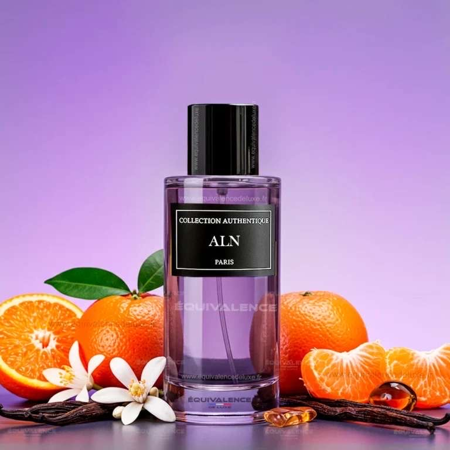
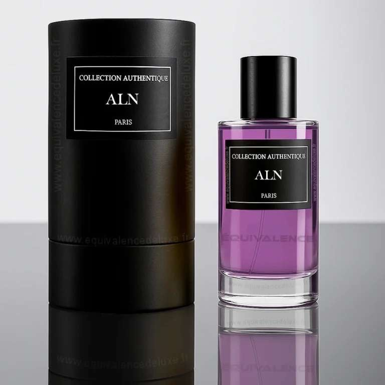

Description
Aln est un parfum délicat et aérien, qui capture la sensation d’une brise florale légère sur la peau. Parfait pour les esprits libres et apaisés.
Inspiration
Inspiré par la nature pure et les matins de printemps, Aln évoque la fraîcheur de la rosée sur les pétales. Un hommage à la simplicité et à la grâce.
Notes Olfactives
- Tête : Fleur de coton, Néroli
- Cœur : Jasmin, Pivoine
- Fond : Musc blanc, Santal